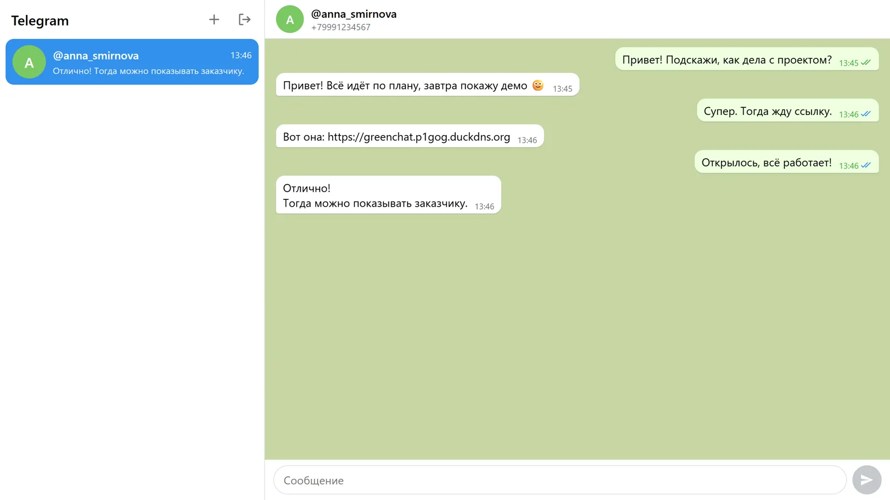
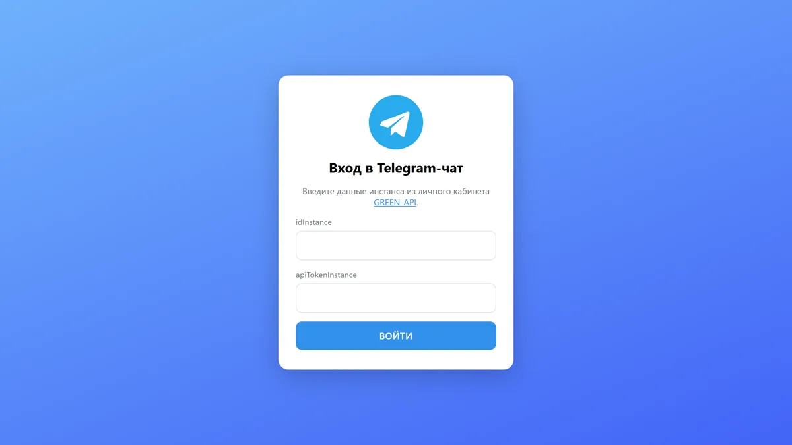
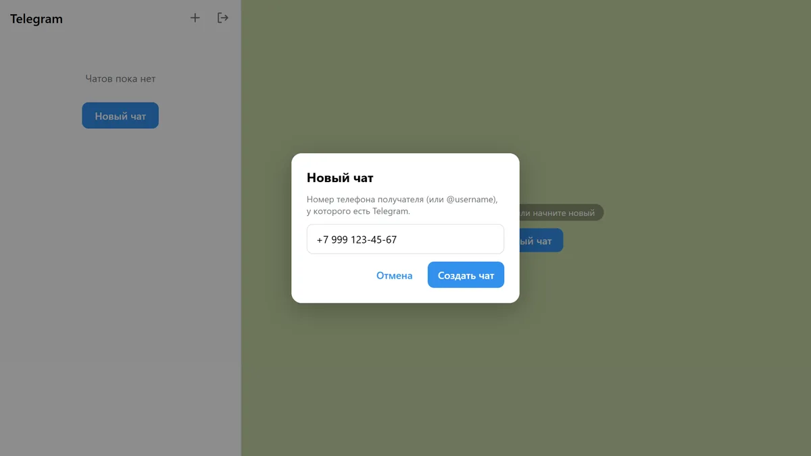
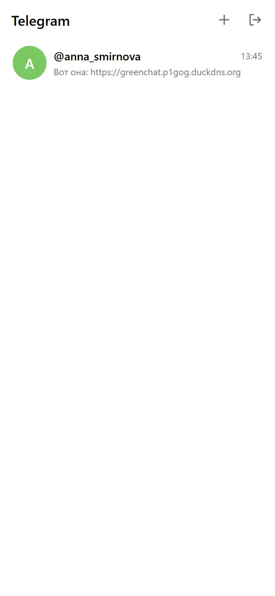
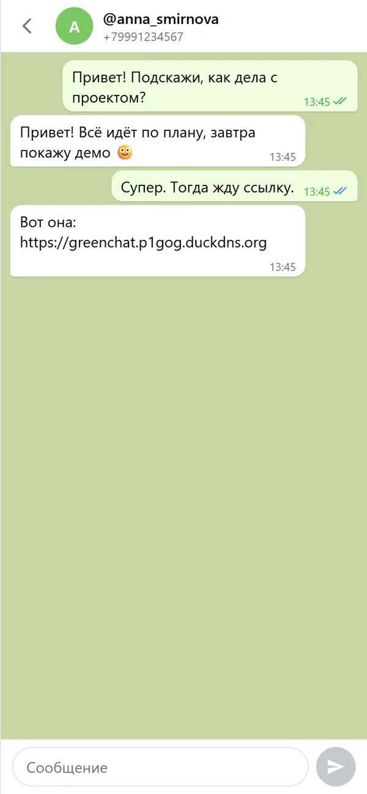

Демо за 25 секунд
Вход, новый чат по номеру, отправка сообщения и ответ получателя, который приходит без перезагрузки. На записи вымышленные данные.
Как выглядит





Как это работает
Бэкенда нет: браузер обращается к GREEN-API напрямую.
- Вход
getStateInstanceпроверяет, что инстанс авторизован. - Новый чатВ Telegram chatId ≠ номер:
checkAccountпревращает номер в chatId. - Отправка
sendMessageс chatId и текстом, галочки обновляются по статусам. - Ответ
receiveNotification(long polling) → обработка →deleteNotification.
Соответствие заданию
| Требование | Как сделано |
|---|---|
| React | ✓ React 19 + TypeScript (strict) |
| Сервис GREEN-API (Telegram) | ✓ документация Telegram-версии: хост инстанса, chatId через CheckAccount |
| Только текстовые сообщения | ✓ прочие типы игнорируются, но удаляются из очереди |
| Внешний вид как у Telegram | ✓ список чатов, пузыри, время, галочки, цвета Telegram Web |
| Максимально простой интерфейс | ✓ три экрана: вход, список чатов, переписка |
| Отправка — SendMessage | ✓ POST …/sendMessage/{token} |
| Получение — HTTP API | ✓ ReceiveNotification + DeleteNotification |
| Вход по idInstance и apiTokenInstance | ✓ данные хранятся только в sessionStorage вкладки |
| Новый чат по номеру телефона | ✓ запасной вариант: @username, если номер скрыт настройками приватности |
| Ответ получателя виден в чате | ✓ приходит без перезагрузки, дубликаты отсекаются по idMessage |
Детали
- React 19
- TypeScript strict
- Vite
- CSS Modules
- Vitest + Testing Library (41 тест)
- Мобильная адаптивность
- Автоскролл «как в мессенджерах»
Для проверки нужен свой инстанс GREEN-API (тариф «Разработчик» бесплатный): как его создать — в инструкции.